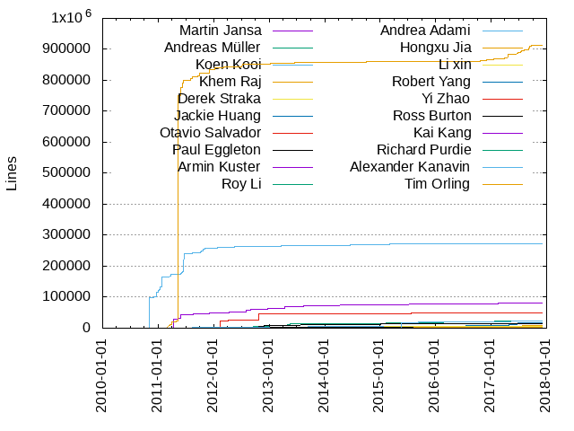
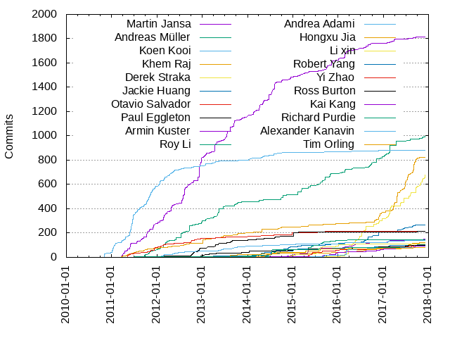

Authors
| Author | Commits (%) | + lines | - lines | First commit | Last commit | Age | Active days | # by commits |
|---|
| Martin Jansa | 1813 (17.33%) | 80706 | 81349 | 2011-01-05 | 2017-10-03 | 2462 days, 13:35:59 | 563 | 1 |
| Andreas Müller | 999 (9.55%) | 23661 | 22508 | 2011-08-02 | 2017-12-01 | 2312 days, 18:59:08 | 285 | 2 |
| Koen Kooi | 880 (8.41%) | 272619 | 41594 | 2010-11-01 | 2016-11-18 | 2208 days, 21:11:20 | 339 | 3 |
| Khem Raj | 822 (7.86%) | 914355 | 995684 | 2011-01-14 | 2017-11-17 | 2499 days, 13:35:48 | 288 | 4 |
| Derek Straka | 680 (6.50%) | 4115 | 3525 | 2014-11-10 | 2017-12-03 | 1118 days, 20:34:39 | 115 | 5 |
| Jackie Huang | 266 (2.54%) | 16808 | 1810 | 2012-10-16 | 2017-11-13 | 1853 days, 22:29:38 | 133 | 6 |
| Otavio Salvador | 217 (2.07%) | 48174 | 4591 | 2011-05-01 | 2017-10-05 | 2348 days, 19:32:54 | 116 | 7 |
| Paul Eggleton | 215 (2.06%) | 13974 | 15900 | 2011-06-13 | 2017-10-04 | 2305 days, 5:33:31 | 81 | 8 |
| Armin Kuster | 149 (1.42%) | 2783 | 1815 | 2014-06-03 | 2017-11-19 | 1264 days, 21:09:24 | 94 | 9 |
| Roy Li | 146 (1.40%) | 5152 | 9906 | 2013-09-10 | 2016-07-21 | 1045 days, 18:17:57 | 101 | 10 |
| Andrea Adami | 139 (1.33%) | 5610 | 4595 | 2011-08-06 | 2017-10-03 | 2250 days, 14:27:13 | 77 | 11 |
| Hongxu Jia | 120 (1.15%) | 8261 | 1063 | 2013-08-12 | 2017-10-18 | 1528 days, 17:44:58 | 60 | 12 |
| Li xin | 110 (1.05%) | 6262 | 1653 | 2014-11-09 | 2016-04-26 | 533 days, 9:23:28 | 55 | 13 |
| Robert Yang | 102 (0.98%) | 685 | 226 | 2012-07-17 | 2017-09-14 | 1884 days, 19:32:09 | 46 | 14 |
| Yi Zhao | 98 (0.94%) | 2140 | 1377 | 2015-05-07 | 2017-09-04 | 851 days, 16:29:36 | 33 | 15 |
| Ross Burton | 97 (0.93%) | 3596 | 3858 | 2012-08-15 | 2017-07-21 | 1800 days, 17:36:09 | 45 | 16 |
| Kai Kang | 95 (0.91%) | 3857 | 1009 | 2014-04-21 | 2017-10-16 | 1273 days, 23:49:44 | 66 | 17 |
| Richard Purdie | 84 (0.80%) | 1113 | 431 | 2010-11-03 | 2016-11-23 | 2212 days, 1:31:04 | 16 | 18 |
| Alexander Kanavin | 83 (0.79%) | 22339 | 1746 | 2015-05-18 | 2017-11-23 | 919 days, 22:23:41 | 16 | 19 |
| Tim Orling | 82 (0.78%) | 1902 | 399 | 2014-02-23 | 2017-10-27 | 1341 days, 16:58:45 | 37 | 20 |
These didn't make it to the top: Huang Qiyu, Philip Balister, Jonathan Liu, Fabio Berton, Andreas Oberritter, Andre McCurdy, Marcin Juszkiewicz, Joe MacDonald, Wenzong Fan, Pascal Bach, Paul Barker, Chen Qi, Kang Kai, Joe Slater, Bian Naimeng, Jack Mitchell, Ricardo Ribalda Delgado, Christopher Larson, Qi.Chen@windriver.com, Qian Lei, Ming Liu, Chong.Lu@windriver.com, Sven Ebenfeld, Mark Hatle, Fathi Boudra, leimaohui, Wang Xin, Mingli Yu, Mario Domenech Goulart, Eric BENARD, Matthieu CRAPET, Anders Darander, Roy.Li, Peter Kjellerstedt, Martin Kelly, Ioan-Adrian Ratiu, Dai Caiyun, Ben Shelton, Andrei Gherzan, Rafaël Carré, Ash Charles, Adrian, dengke.du@windriver.com, Zhenhua Luo, Ting Liu, Marko Lindqvist, Andreas Mueller, fan.xin, Chunrong Guo, Andrea Galbusera, Mark Asselstine, Manuel Bachmann, Jens Rehsack, André Draszik, Samuel Stirtzel, Mike Crowe, Jagadeesh Krishnanjanappa, Peter Bigot, Oleksandr Kravchuk, Denys Dmytriyenko, lumag, Yue Tao, Trevor Woerner, Randy MacLeod, Joel A Fernandes, Szombathelyi György, Peter Tworek, Paul Gortmaker, Max Krummenacher, Denis 'GNUtoo' Carikli, Daniela Plascencia, Catalin Enache, Carlos Rafael Giani, Amarnath Valluri, Noor Ahsan, Jussi Kukkonen, Felipe F. Tonello, S. Lockwood-Childs, Michael Lippautz, Gary Thomas, mike.looijmans@topic.nl, Patrick Ohly, Maciej Borzecki, Lukas Bulwahn, Ismo Puustinen, Tom Rini, Moritz Fischer, Maxin B. John, Li Zhou, Eduardo Silva, Dominic Sacré, Dmitry Eremin-Solenikov, Zhixiong Chi, Lauren Post, Dan McGregor, Chong Lu, mingli.yu@windriver.com, dv@pseudoterminal.org, Zheng Ruoqin, Stefan Herbrechtsmeier, Stefan Agner, Nicolas Dechesne, George McCollister, Bruce Ashfield, Xufeng Zhang, Marc Ferland, Javier Viguera, Jason Kridner, Diego Rondini, stephen.arnold42, Yusuke Mitsuki, Yevhen Kyriukha, Stefan Müller-Klieser, Saul Wold, Raphael Silva, Morgan Little, Mihai Prica, Jukka Rissanen, Frank Meerkoetter, Eric Bénard, Cristian Iorga, Changhyeok Bae, Bob Ham, Aws Ismail, eu@felipetonello.com, chase maupin, YangHaibo, Tom Hochstein, Sander van Grieken, Nick D'Ademo, Li Xin, Jose Alarcon, Johannes Pointner, Jason Wessel, Jacob Kroon, Fahad Usman, Denis Carikli, Darren Hart, Daniel Markus, Dan McDougall, Belal, Awais, Andy Kling, Amy Fong, Adrian Dudau, zhangpanpan, lchristina26, Tudor Florea, Stephen Arnold, Shakeel, Muhammad, Robert P. J. Day, Radek Dostal, Nobuhiro Iwamatsu, Neena Busireddy, Mikko Ylinen, MiLo, Martin Ertsaas, Krzysztof Kozlowski, Joshua Lock, Jianchuan Wang, Herrie, Haris Okanovic, Gianfranco Costamagna, Fabien Lahoudere, Enrico Scholz, Cliff Brake, Bill Randle, Athanasios Oikonomou, Andrej Rode, Alexandru Moise, Alejandro Mery, Adam YH Lee, yanjun.zhu, ulf@emagii.com, susanbian, Zongchun Yu, Ulf Samuelsson, Thomas Fitzsimmons, Steffen Sledz, Simon Busch, Sebastian Krzyszkowiak, Ruben De Smet, Riku Voipio, Richard Tollerton, Philippe De Swert, Pau Espin Pedrol, Patrick Patat, Oliver Graute, Mikko Rapeli, Mike Looijmans, Maxim Uvarov, Matthew McClintock, Marc Reilly, Li Wang, Klaus Kurzmann, José Bollo, Jan Luebbe, Imran Mehmood, Holger Hans Peter Freyther, Gary S. Robertson, Frederico Cadete, Elvis Dowson, Drew Moseley, Dmitry Rozhkov, David Nyström, Cody P Schafer, Chris Patterson, Chris Morgan, Ben Deering, Bartosz Golaszewski, Ann Thornton, Andrej Valek, Andreas Baak, Alexey Firago, Alejandro Hernandez, Adam C. Foltzer, texierp, pespin, leimh, jackie huang, chunrong guo, Zhu Yanjun, Zhiquan Li, Zhang Xiao, Wenlin Kang, Wayne Warren, Victor Rodriguez, Tom Hayward, Tasslehoff Kjappfot, Steve Sakoman, Stephano Cetola, Soren Brinkmann, Shrikant Bobade, Ricardo Salveti, Qiang Chen, Peter A. Bigot, Olof Johansson, Olivia Yin, Norman Schleicher, Noor, Ahsan, Nicolas Ferre, Nicolas Aguirre, Nick Lewis, Mihaela Sendrea, Maxin John, Markus Lehtonen, Marian Pritsak, Marek Vasut, Marek Belisko, Manjukumar Matha, Liu Jian, Linus Svensson, Liang Li, Lei Maohui, Laszlo Papp, Kyle Russell, Krzysztof Sywula, Krisztian Litkey, Juhee Cho, Josep Puigdemont, Jian Liu, Jakob Drexel, Igor Santos, Hugo Vasconcelos Saldanha, Hongjun.Yang, Herve Jourdain, Heghedus Razvan, He Zhe, Haiqing Bai, Frederic PAUT, Eren Türkay, Davis, Michael, Bian Yaqin, Bernhard Guillon, Baptiste DURAND, Apelete Seketeli, Aníbal Limón, Anuj Mittal, Ankit Navik, Alexandre Belloni, Alex Stewart, Alex Lennon, Alejandro del Castillo, Alejandro Joya, Abdur Rehman, A. Varnin, zhangxiao, yzhu1, yaoxp, xin.ouyang@windriver.com, wqyoung, root root, robert_joslyn@selinc.com, pieterg, mcrapet, jobol@nonadev.net, jc@vtkloud.com, gary.robertson@linaro.org, dhall, chunguang yang, baali, Zoltan Kuscsik, Zeeshan Ali, Yong, Jonathan, Yauhen Kharuzhy, Yasir Khan, Yao Xinpan, Yannick Gicquel, Yang Shi, Yadi.hu, Will Page, Wayne Tams, Vesa Jääskeläinen, Tomas Novotny, Tom King, Todd E Brandt, Thomas PERROT, Thilo Cestonaro, Terry Boese, Tanu Kaskinen, Sylvain Paré, Sujith H, Steven van der Schoot, Stefano Babic, Stefan Schmidt, Stanley Cheong Kwan, Phoong, Stanacar, StefanX, Scott Ellis, Ruslan Bilovol, Rudolf J Streif, Romain Bazile, Rob Woolley, Richard Leitner, Reinette Chatre, Raphael Freudiger, Prabhu Sundararaj, Piotr Tworek, Philipp Wagner, Phil Blundell, Pengyu Ma, Paul Vaduva, Ovidiu Vancea, Ovidiu Panait, Noor, Nitin A Kamble, Nick Glynn, Ng, Wei Tee, Nate Karstens, Naresh Bhat, Mike Holmes, Michaël Burtin, Michael Walle, Michael 'Mickey' Lauer, Matthieu Crapet, Matt Ranostay, Mateusz Nowakowski, Martin Kepplinger, Martin JaMa Jansa, Mariano Lopez, Marco Trillo, Marcel Ziswiler, Magnus Olsson, Lukasz Nowak, Lukas Märdian, Luca Vaudano, Liwei Song, Lewis, Nick, Leonardo Sandoval, Lei Yang, Kirill Esipov, Kinsella, Ray, Kimmo Surakka, Kevin Baker, Karlsson, Johnny, Kai Ulrich, Junxian.Xiao, Junling Zheng, Jonathan Haws, Jonathan Haigh, Jonatan Pålsson, Johann Fridriksson, Johan Hovold, Jibin Xu, Jesse Zhang, Jeremy Puhlman, Jate Sujjavanich, Jacob Stiffler, Jaap de Jong, Igor Socec, Ian Reinhart Geiser, Ian Ray, Horia Geanta, Henry Hallam, Hector Roussille, Guy Morand, Graeme Gregory, Goran Cengic, GNUtoo, Franklin S. Cooper Jr, Franklin Cooper Jr, Florian Wickert, Florian Boor, Fabrice Coulon, Diego Sueiro, Denis, David Vincent, David Turgeon, David Andrey, Dariusz Pelowski, Daniel McGregor, Daniel Hilst Selli, Daniel Adolfsson, Dan Walkes, Damien RANNOU, Connor Smith, Connor Abbott, Colin Walters, Clemens Lang, Ciprian Ciubotariu, Christophe PRIOUZEAU, Christoph Settgast, Christian Ziethén, Christian Muller, Christian Ege, Chris Larson, Charles Oram, Chang Rebecca Swee Fun, Chai, Chong Yi, Chad Nelson, Bruno Vernay, Bruno Bottazzini, Branden Archer, Brad Bishop, Bopeng Liu, Bogdan Hopulele, Bob Cochran, Bill Pittman, Benjamin Gaignard, Balasubramanian, Aparna, Awais Belal, Andrei Kholodnyi, Andrei Dinu, Anders Roxell, Alexandre Tuleu, Alexandre Fournier, Adam Chappell, Aaron Zinghini
Only top 20 authors shown
Only top 20 authors shown
| Month | Author | Commits (%) | Next top 5 | Number of authors |
|---|
| 2017-12 | Andreas Müller | 10 (76.92% of 13) | Derek Straka, Stefan Müller-Klieser | 3 |
| 2017-11 | Derek Straka | 64 (53.33% of 120) | Andreas Müller, Paul Barker, Ricardo Ribalda Delgado, Martin Kelly, Zheng Ruoqin | 26 |
| 2017-10 | Derek Straka | 33 (37.93% of 87) | Khem Raj, Paul Eggleton, Pascal Bach, Jonathan Liu, Armin Kuster | 36 |
| 2017-09 | Khem Raj | 57 (23.85% of 239) | Derek Straka, Huang Qiyu, Mark Hatle, Pascal Bach, fan.xin | 34 |
| 2017-08 | Khem Raj | 55 (26.96% of 204) | Derek Straka, Hongxu Jia, Jackie Huang, Andreas Müller, Kai Kang | 30 |
| 2017-07 | Khem Raj | 73 (39.67% of 184) | Hongxu Jia, Derek Straka, Ming Liu, Andreas Müller, Martin Jansa | 34 |
| 2017-06 | Khem Raj | 77 (36.32% of 212) | Derek Straka, Martin Kelly, Jackie Huang, Ross Burton, Moritz Fischer | 37 |
| 2017-05 | Derek Straka | 28 (22.05% of 127) | Khem Raj, Huang Qiyu, Jackie Huang, Alexander Kanavin, Randy MacLeod | 45 |
| 2017-04 | Khem Raj | 70 (40.23% of 174) | Andreas Müller, Jackie Huang, Pascal Bach, Martin Jansa, Chen Qi | 38 |
| 2017-03 | Khem Raj | 85 (43.59% of 195) | Derek Straka, Martin Jansa, Andreas Müller, Peter Kjellerstedt, Pascal Bach | 31 |
| 2017-02 | Derek Straka | 73 (27.76% of 263) | Andreas Müller, Peter Kjellerstedt, Armin Kuster, Andrea Adami, Martin Jansa | 36 |
| 2017-01 | Andreas Müller | 22 (24.18% of 91) | Pascal Bach, Derek Straka, Oleksandr Kravchuk, Andre McCurdy, Joe Slater | 27 |
| 2016-12 | Khem Raj | 25 (19.38% of 129) | Derek Straka, Andreas Müller, Ricardo Ribalda Delgado, Oleksandr Kravchuk, Daniela Plascencia | 28 |
| 2016-11 | Khem Raj | 48 (23.30% of 206) | Jackie Huang, Derek Straka, Andreas Oberritter, Andreas Müller, Kai Kang | 37 |
| 2016-10 | Derek Straka | 25 (23.58% of 106) | Andreas Müller, Khem Raj, Chen Qi, dengke.du@windriver.com, Armin Kuster | 35 |
| 2016-09 | Andreas Müller | 33 (22.45% of 147) | Wang Xin, Jackie Huang, Martin Jansa, Mingli Yu, Wenzong Fan | 44 |
| 2016-08 | Derek Straka | 35 (15.70% of 223) | Jackie Huang, Fabio Berton, Martin Jansa, Wang Xin, Hongxu Jia | 44 |
| 2016-07 | Derek Straka | 49 (42.24% of 116) | Jackie Huang, mingli.yu@windriver.com, Mingli Yu, Kai Kang, Martin Jansa | 27 |
| 2016-06 | Derek Straka | 31 (36.47% of 85) | Martin Jansa, Hongxu Jia, Christopher Larson, S. Lockwood-Childs, Richard Purdie | 25 |
| 2016-05 | Derek Straka | 29 (22.48% of 129) | Armin Kuster, Andreas Müller, Christopher Larson, Alexander Kanavin, Jonathan Liu | 40 |
| 2016-04 | Derek Straka | 38 (27.74% of 137) | Fabio Berton, Ross Burton, Ricardo Ribalda Delgado, Armin Kuster, Joe MacDonald | 42 |
| 2016-03 | Derek Straka | 46 (36.22% of 127) | Martin Jansa, Alexander Kanavin, Pascal Bach, Rafaël Carré, Andreas Müller | 26 |
| 2016-02 | Martin Jansa | 35 (17.59% of 199) | Alexander Kanavin, Andreas Müller, Mike Crowe, Derek Straka, Richard Purdie | 35 |
| 2016-01 | Sven Ebenfeld | 22 (15.17% of 145) | Li xin, Martin Jansa, Dai Caiyun, Andreas Müller, Jackie Huang | 38 |
| 2015-12 | Kai Kang | 15 (17.44% of 86) | Andre McCurdy, Martin Jansa, fan.xin, Rafaël Carré, Yi Zhao | 31 |
| 2015-11 | Martin Jansa | 34 (24.64% of 138) | Adrian, Rafaël Carré, Jens Rehsack, Wenzong Fan, Jackie Huang | 35 |
| 2015-10 | Martin Jansa | 33 (23.40% of 141) | Andreas Müller, Qi.Chen@windriver.com, Manuel Bachmann, Kai Kang, Jens Rehsack | 34 |
| 2015-09 | Andreas Müller | 31 (24.60% of 126) | Alexander Kanavin, Roy Li, Martin Jansa, Wenzong Fan, Jackie Huang | 37 |
| 2015-08 | Andreas Müller | 28 (16.18% of 173) | Tim Orling, Roy Li, Li xin, leimaohui, Yi Zhao | 32 |
| 2015-07 | Li xin | 38 (30.89% of 123) | leimaohui, Roy Li, Otavio Salvador, Kang Kai, Jonathan Liu | 30 |
| 2015-06 | Yi Zhao | 14 (15.38% of 91) | Bian Naimeng, Andre McCurdy, Roy Li, Li xin, Andreas Müller | 26 |
| 2015-05 | Yi Zhao | 26 (24.53% of 106) | Andreas Müller, Khem Raj, Roy Li, Martin Jansa, Armin Kuster | 27 |
| 2015-04 | Armin Kuster | 31 (32.98% of 94) | Martin Jansa, Dmitry Eremin-Solenikov, Roy Li, Tim Orling, Chunrong Guo | 27 |
| 2015-03 | Andreas Müller | 33 (31.13% of 106) | Andreas Oberritter, Martin Jansa, Khem Raj, Joe MacDonald, Otavio Salvador | 36 |
| 2015-02 | Bian Naimeng | 15 (18.07% of 83) | Martin Jansa, Andreas Müller, Sven Ebenfeld, Roy Li, Joe MacDonald | 26 |
| 2015-01 | Paul Eggleton | 21 (16.54% of 127) | Andreas Müller, Robert Yang, Jackie Huang, Martin Jansa, Li xin | 33 |
| 2014-12 | Qian Lei | 16 (13.68% of 117) | Martin Jansa, Otavio Salvador, Armin Kuster, Paul Eggleton, Li xin | 27 |
| 2014-11 | Qian Lei | 17 (18.28% of 93) | Jackie Huang, Li xin, Derek Straka, Bian Naimeng, Ross Burton | 26 |
| 2014-10 | Andreas Müller | 25 (21.37% of 117) | Martin Jansa, Kang Kai, Chong.Lu@windriver.com, Jackie Huang, Chen Qi | 29 |
| 2014-09 | Robert Yang | 16 (15.53% of 103) | Khem Raj, Andreas Müller, Chen Qi, Roy Li, Chong.Lu@windriver.com | 25 |
| 2014-08 | Martin Jansa | 60 (33.90% of 177) | Koen Kooi, Jackie Huang, Roy Li, Kang Kai, Peter Bigot | 37 |
| 2014-07 | Martin Jansa | 43 (24.02% of 179) | Richard Purdie, Roy Li, Robert Yang, Tim Orling, Ting Liu | 29 |
| 2014-06 | Martin Jansa | 47 (31.76% of 148) | Richard Purdie, Robert Yang, Chong.Lu@windriver.com, Roy Li, Paul Eggleton | 39 |
| 2014-05 | Martin Jansa | 34 (25.37% of 134) | Tim Orling, Ash Charles, Matthieu CRAPET, Ben Shelton, Koen Kooi | 34 |
| 2014-04 | Khem Raj | 24 (15.69% of 153) | Jackie Huang, Andreas Müller, Koen Kooi, Chong.Lu@windriver.com, Kang Kai | 35 |
| 2014-03 | Martin Jansa | 47 (43.93% of 107) | Lauren Post, Trevor Woerner, Matthieu CRAPET, Otavio Salvador, Diego Rondini | 33 |
| 2014-02 | Martin Jansa | 17 (38.64% of 44) | Matthieu CRAPET, Tim Orling, Khem Raj, Roy Li, Koen Kooi | 12 |
| 2014-01 | Martin Jansa | 31 (32.98% of 94) | Koen Kooi, Ross Burton, Ting Liu, Paul Eggleton, Roy Li | 26 |
| 2013-12 | Otavio Salvador | 6 (13.64% of 44) | Martin Jansa, Khem Raj, ulf@emagii.com, Patrick Patat, Kang Kai | 27 |
| 2013-11 | Martin Jansa | 17 (22.97% of 74) | Ross Burton, Roy Li, Joe MacDonald, Jack Mitchell, dv@pseudoterminal.org | 28 |
| 2013-10 | Martin Jansa | 11 (11.22% of 98) | Andreas Müller, Khem Raj, Chen Qi, Koen Kooi, Andrea Adami | 34 |
| 2013-09 | Andreas Müller | 21 (25.61% of 82) | Andrea Adami, Khem Raj, Shakeel, Muhammad, Jonathan Liu, Felipe F. Tonello | 31 |
| 2013-08 | Martin Jansa | 88 (58.28% of 151) | Hongxu Jia, Paul Eggleton, Marko Lindqvist, Fathi Boudra, Andrea Adami | 19 |
| 2013-07 | Martin Jansa | 69 (62.16% of 111) | Jonathan Liu, Roy.Li, Paul Eggleton, Otavio Salvador, Mihai Prica | 16 |
| 2013-06 | Andreas Müller | 13 (15.66% of 83) | Khem Raj, Martin Jansa, Andrea Adami, Paul Barker, Jonathan Liu | 21 |
| 2013-05 | Andreas Müller | 51 (43.59% of 117) | Paul Eggleton, Martin Jansa, Koen Kooi, Andrea Adami, Paul Barker | 21 |
| 2013-04 | Martin Jansa | 83 (40.69% of 204) | Andreas Müller, Paul Eggleton, Paul Barker, Jack Mitchell, Koen Kooi | 23 |
| 2013-03 | Andreas Oberritter | 12 (16.90% of 71) | Martin Jansa, Khem Raj, Koen Kooi, Marcin Juszkiewicz, Jackie Huang | 21 |
| 2013-02 | Paul Eggleton | 13 (19.70% of 66) | Martin Jansa, Andreas Müller, Ross Burton, Marcin Juszkiewicz, Andrei Gherzan | 20 |
| 2013-01 | Martin Jansa | 30 (23.81% of 126) | Andreas Müller, Khem Raj, Koen Kooi, Marcin Juszkiewicz, Andrei Gherzan | 24 |
| 2012-12 | Martin Jansa | 157 (63.56% of 247) | Paul Eggleton, Andreas Müller, Ross Burton, Marcin Juszkiewicz, Otavio Salvador | 21 |
| 2012-11 | Martin Jansa | 25 (25.00% of 100) | Paul Eggleton, Marcin Juszkiewicz, Andreas Müller, Eric BENARD, Philip Balister | 23 |
| 2012-10 | Otavio Salvador | 27 (20.93% of 129) | Martin Jansa, Paul Eggleton, Koen Kooi, Khem Raj, Marcin Juszkiewicz | 23 |
| 2012-09 | Andreas Müller | 32 (34.41% of 93) | Martin Jansa, Marcin Juszkiewicz, Khem Raj, Sander van Grieken, Paul Eggleton | 14 |
| 2012-08 | Martin Jansa | 47 (47.47% of 99) | Andreas Müller, Khem Raj, Ross Burton, Otavio Salvador, Andrea Adami | 16 |
| 2012-07 | Martin Jansa | 85 (59.03% of 144) | Andreas Müller, Koen Kooi, Paul Eggleton, Denis Carikli, Christopher Larson | 17 |
| 2012-06 | Andreas Müller | 26 (40.62% of 64) | Martin Jansa, Andrea Adami, Koen Kooi, Khem Raj, Otavio Salvador | 14 |
| 2012-05 | Andreas Müller | 28 (31.46% of 89) | Koen Kooi, Martin Jansa, Andrea Adami, Khem Raj, Andreas Oberritter | 12 |
| 2012-04 | Martin Jansa | 40 (39.22% of 102) | Koen Kooi, Khem Raj, Philip Balister, Otavio Salvador, Andreas Müller | 20 |
| 2012-03 | Andreas Müller | 38 (31.67% of 120) | Martin Jansa, Koen Kooi, Khem Raj, Otavio Salvador, Andreas Oberritter | 15 |
| 2012-02 | Martin Jansa | 50 (35.21% of 142) | Andreas Müller, Koen Kooi, Andrea Adami, Otavio Salvador, Peter Tworek | 16 |
| 2012-01 | Koen Kooi | 42 (40.78% of 103) | Andreas Müller, Martin Jansa, Peter Tworek, Otavio Salvador, Khem Raj | 16 |
| 2011-12 | Martin Jansa | 34 (25.76% of 132) | Koen Kooi, Otavio Salvador, Zhenhua Luo, Eric BENARD, Khem Raj | 19 |
| 2011-11 | Koen Kooi | 61 (47.66% of 128) | Martin Jansa, Andreas Müller, Otavio Salvador, Khem Raj, Jason Kridner | 11 |
| 2011-10 | Koen Kooi | 57 (40.14% of 142) | Martin Jansa, Andreas Müller, Otavio Salvador, Denis 'GNUtoo' Carikli, Khem Raj | 15 |
| 2011-09 | Martin Jansa | 42 (33.87% of 124) | Koen Kooi, Andreas Müller, Khem Raj, Joel A Fernandes, lumag | 12 |
| 2011-08 | Koen Kooi | 22 (21.78% of 101) | Andreas Mueller, Martin Jansa, Noor Ahsan, Khem Raj, Anders Darander | 22 |
| 2011-07 | Koen Kooi | 40 (41.67% of 96) | Martin Jansa, Khem Raj, Paul Eggleton, Tom Rini, Andreas Mueller | 12 |
| 2011-06 | Koen Kooi | 135 (83.85% of 161) | Otavio Salvador, Martin Jansa, Khem Raj, Paul Eggleton, Tom Rini | 10 |
| 2011-05 | Martin Jansa | 50 (37.59% of 133) | Koen Kooi, Otavio Salvador, Khem Raj, Simon Busch, Andreas Oberritter | 6 |
| 2011-04 | Martin Jansa | 35 (41.67% of 84) | Koen Kooi, Khem Raj, Michael Lippautz, Philippe De Swert | 5 |
| 2011-03 | Martin Jansa | 26 (44.07% of 59) | Koen Kooi, Khem Raj, Richard Purdie, Philippe De Swert | 5 |
| 2011-02 | Koen Kooi | 8 (100.00% of 8) | | 1 |
| 2011-01 | Koen Kooi | 72 (97.30% of 74) | Martin Jansa, Khem Raj | 3 |
| 2010-12 | Koen Kooi | 9 (100.00% of 9) | | 1 |
| 2010-11 | Koen Kooi | 31 (96.88% of 32) | Richard Purdie | 2 |
| Year | Author | Commits (%) | Next top 5 | Number of authors |
|---|
| 2017 | Khem Raj | 442 (23.15% of 1909) | Derek Straka, Andreas Müller, Huang Qiyu, Jackie Huang, Hongxu Jia | 157 |
| 2016 | Derek Straka | 316 (18.07% of 1749) | Andreas Müller, Martin Jansa, Khem Raj, Jackie Huang, Alexander Kanavin | 178 |
| 2015 | Andreas Müller | 171 (12.27% of 1394) | Martin Jansa, Roy Li, Li xin, Yi Zhao, Armin Kuster | 153 |
| 2014 | Martin Jansa | 324 (22.10% of 1466) | Jackie Huang, Koen Kooi, Andreas Müller, Richard Purdie, Robert Yang | 136 |
| 2013 | Martin Jansa | 340 (27.71% of 1227) | Andreas Müller, Khem Raj, Paul Eggleton, Koen Kooi, Andrea Adami | 111 |
| 2012 | Martin Jansa | 532 (37.15% of 1432) | Andreas Müller, Koen Kooi, Otavio Salvador, Paul Eggleton, Khem Raj | 73 |
| 2011 | Koen Kooi | 544 (43.80% of 1242) | Martin Jansa, Otavio Salvador, Khem Raj, Andreas Müller, Andreas Mueller | 50 |
| 2010 | Koen Kooi | 40 (97.56% of 41) | Richard Purdie | 2 |
| Domains | Total (%) |
|---|
| gmail.com | 3476 (33.23%) |
|---|
| windriver.com | 1427 (13.64%) |
|---|
| googlemail.com | 938 (8.97%) |
|---|
| dominion.thruhere.net | 838 (8.01%) |
|---|
| asterius.io | 675 (6.45%) |
|---|
| cn.fujitsu.com | 370 (3.54%) |
|---|
| linux.intel.com | 358 (3.42%) |
|---|
| ossystems.com.br | 311 (2.97%) |
|---|
| intel.com | 186 (1.78%) |
|---|
| linaro.org | 170 (1.63%) |
|---|